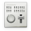
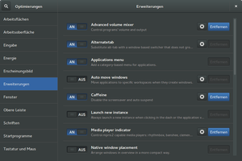
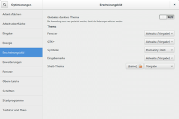
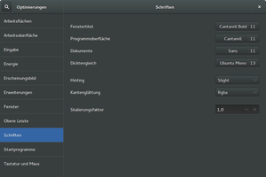

GNOME Tweak Tool
Dieser Artikel wurde für die folgenden Ubuntu-Versionen getestet:
Ubuntu 14.04 Trusty Tahr
Zum Verständnis dieses Artikels sind folgende Seiten hilfreich:

Mit Hilfe des GNOME-Optimierungswerkzeugs  , welches Teil des GNOME-Projekts ist, lassen sich sehr viele Einstellungen an der GNOME Shell, aber auch am restlichen System bearbeiten, die mit Hilfe der eigentlichen Systemeinstellungen nicht konfiguriert werden können. Dieser Artikel gibt einen Überblick über die einzelnen Bereiche des Werkzeugs und was für Veränderungen am System vorgenommen werden können.
, welches Teil des GNOME-Projekts ist, lassen sich sehr viele Einstellungen an der GNOME Shell, aber auch am restlichen System bearbeiten, die mit Hilfe der eigentlichen Systemeinstellungen nicht konfiguriert werden können. Dieser Artikel gibt einen Überblick über die einzelnen Bereiche des Werkzeugs und was für Veränderungen am System vorgenommen werden können.
Bei Unity, das zwar einen GNOME-Unterbau besitzt, sich aber in manchen Bereichen deutlich unterscheidet, sollte man das Programm unity-tweak-tool einsetzen. Dieses Werkzeug ist ebenfalls Bestandteil der offiziellen Paketquellen.
Installation¶
Standardmäßig ist das Programm unter Ubuntu GNOME schon vorinstalliert. Falls es nicht installiert ist, dann kann es mit Hilfe des folgenden Pakets nachinstalliert werden[1]:
gnome-tweak-tool (universe)
 mit apturl
mit apturl
Paketliste zum Kopieren:
sudo apt-get install gnome-tweak-tool
sudo aptitude install gnome-tweak-tool
Bedienung¶
Das GNOME-Optimierungswerkzeug lässt sich über "Anwendungen → Optimierungswerkzeug" aufrufen[2]. Das Werkzeug ist in elf Bereiche aufgeteilt, die in der folgenden Tabelle vorgestellt werden:
| GNOME-Optimierungswerkzeug | |
| Bereich | Beschreibung |
| Arbeitsflächen | In diesem Bereich kann man festlegen, ob die Arbeitsflächen dynamisch erstellt werden sollen oder auf eine bestimmte Anzahl fixiert sein sollen. Außerdem kann man noch festlegen, ob jeder Bildschirm oder nur der primäre mehrere Arbeitsflächen besitzt. |
| Arbeitsoberfläche | Hier kann man die Anzeige von Symbolen auf der Arbeitsfläche aktivieren. Des Weiteren kann man das Hintergrundbild festlegen und die Art der Darstellung festlegen. |
| Eingabe | Im Bereich "Eingabe" kann man detailliert das Verhalten einiger Tasten anpassen. |
| Energie | In den Energieoptionen kann man das Verhalten des Einschaltknopfes festlege und was passiert, wenn man den Laptop-Deckel schließt. |
| Erscheinungsbild | Man kann hier entscheiden, ob das dunkle Design/Thema global für alle GTK3-Anwendungen angewendet werden soll. Außerdem ist es möglich, die verwendeten Symbole, die Fensterdekoration und das gesamte Thema anzupassen. Nach der Installation der Erweiterung "User themes" ist es zusätzlich möglich, das Thema für die GNOME Shell zu ändern. |
| Erweiterung | Dieser Bereich ermöglicht das Installieren, Verwalten und Löschen von Erweiterungen für die GNOME Shell, ohne dafür auf die Internetseite https://extensions.gnome.org/ gehen zu müssen. |
| Fenster | Hier ist es möglich, das Verhalten der Fenster und der Fensterdekoration anzupassen. Dazu gehört das Verhalten der Titelleiste bei Doppelklicks und Mittelklicks und das Verbergen der Knöpfe der Titelleiste. |
| Obere Leiste | An der "Oberen Leiste" kann man das Erscheinungsbild der Uhr und des Kalenders anpassen. |
| Schriften | Neben den verwendeten Schriftarten lässt sich hier auch das Schriftbild verbessern. |
| Startprogramme | Hier kann man Programme angeben, die beim Starten der Sitzung automatisch gestartet werden sollen (siehe Autostart). |
| Tastatur und Maus | Man kann in diesem Bereich zum Beispiel das Einfügen mit der mittleren Taste ein- oder ausschalten. |
|  |
| Bereich Erweiterung - Dunkles Thema |
|  |
| Bereich Erscheinungsbild - Helles Thema |
|  |
| Bereich Schriften - Dunkles Thema |
Problembehandlung¶
Schrift beim dunklen Thema nicht lesbar¶
Falls man das dunkle Thema global aktiviert hat, dann kann es vorkommen, dass bei manchen Programmen wie zum Beispiel dem Software-Center, die Schrift stellenweise nicht oder nur schlecht lesbar ist. In diesem Fall entweder das dunkle Thema wieder ausschalten oder die Hintergrundfarben selbst anpassen. Dazu die Datei /usr/share/software-center/ui/gtk3/css/softwarecenter.css mit Root-Rechten bearbeiten und dann die beiden Zeilen:
@define-color light-aubergine #DED7DB; @define-color super-light-aubergine #F4F1F3;
ändern in:
@define-color light-aubergine #393F3F; @define-color super-light-aubergine #393F3F;
Dunkles Thema ist nicht bei allen Anwendungen in Benutzung¶
Hier kann man das Haupt-Thema (nach einer Sicherung) einfach umbenennen:
cd /usr/share/themes/Adwaita/gtk-3.0 sudo mv gtk.css gtk.css.bak sudo cp gtk-dark.css gtk.css
 Übersichtsartikel
Übersichtsartikel- Erstellt mit Inyoka
-
 2004 – 2017 ubuntuusers.de • Einige Rechte vorbehalten
2004 – 2017 ubuntuusers.de • Einige Rechte vorbehalten
Lizenz • Kontakt • Datenschutz • Impressum • Serverstatus -
Serverhousing gespendet von